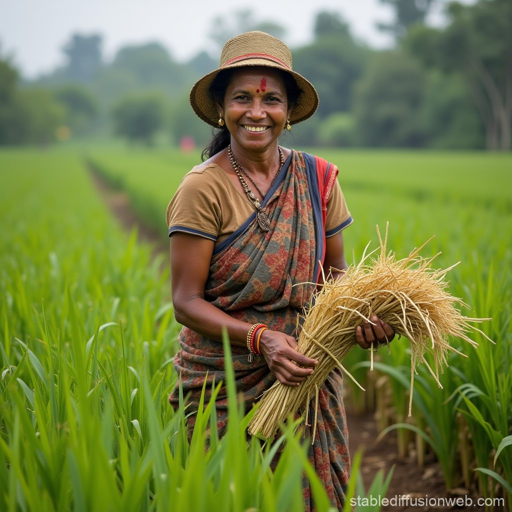

GROUP 05
Agriculture of Sri Lanka
2021/A/441
இலங்கையின் விவசாயம்
இலங்கையின் விவசாயம் நெல் பயிரிடுவதில் முக்கிய கவனம் செலுத்துகிறது. மேலும் அது பல்வேறு வகையான பயிர்களையும், தோட்டப் பயிர்களையும் கொண்டுள்ளது.
முக்கிய அம்சங்கள்:
- நெல் (Paddy)
- பல்வேறு பயிர்கள் (Various Crops)
- தோட்டப் பயிர்கள் (Plantation Crops)
- அரச நிறுவனங்கள் (Govt Institutions)

விவசாய வகைகள்
இலங்கையின் விவசாயம் பல்வேறு வகைகளில் உள்ளது:
- தன்னிறைவு வேளாண்மை
- மாற்றிட வேளாண்மை
- தீவிர வேளாண்மை
- வணிக வேளாண்மை
- தோட்டப் பயிர்கள்
- கலப்பு பண்ணை